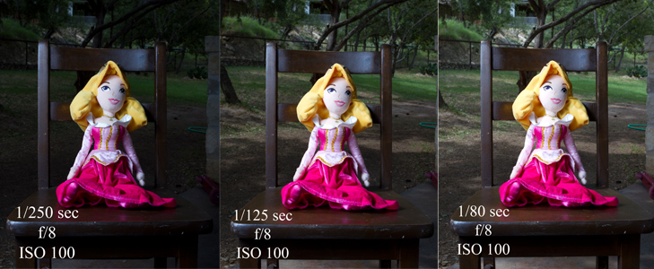
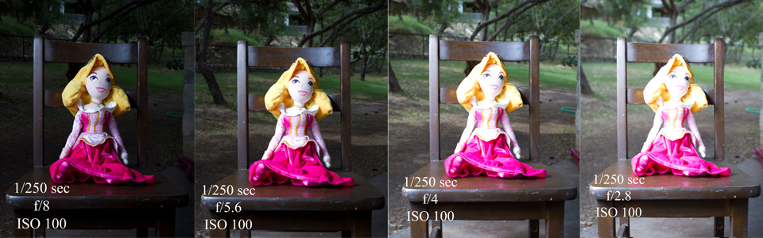
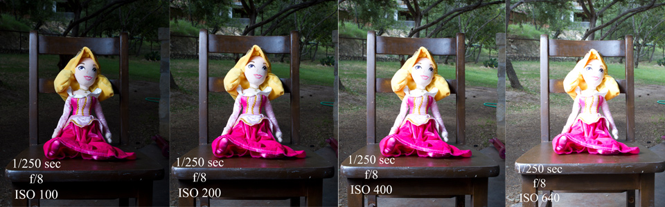

Configuración manual, primeros pasos
Por Natali Del Percio | Posteado: 07/5/2022
Así que ya sabes cómo fotear con luz natural. Sabes cómo lograr la exposición perfecta. Pero, ¿sabe cómo funcionan juntas las configuraciones de tu cámara para lograr la exposición adecuada? ¿Qué tal si lanzas un flash a la mezcla? ¡Sí! Lo sé. Velocidad de obturación, apertura, ISO… ¿charla técnica? Tal vez sea así, pero toda es buena información que nosotros, como profesionales, debemos saber y comprender. No es necesario que sea un experto, pero al menos tenga un conocimiento básico de cómo funcionan juntas las configuraciones de su cámara. Si aún no lo sabe, querrá buscar 'triángulo de exposición'. Esto le dará la comprensión de cómo estos tres ajustes funcionan juntos para lograr una exposición adecuada. Esta publicación en particular va a repasar cómo estas configuraciones afectan la cantidad de iluminación ambiental y de flash que ingresa a su cámara a través de la lente cuando pones tu flash en manual.
Empecemos desde lo mas basico…
Velocidad de obturación: Esta es la cantidad de tiempo, o CUÁNTO TIEMPO, el obturador de su cámara está abierto una vez que presiona el botón del obturador. Esto podría ser de 1/15 segundos a 30 segundos, dependiendo de lo que haya configurado y de su cámara específica. Cuanto más tiempo permanezca abierto el obturador, más luz ambiental entrará en la cámara. Su obturador controla la cantidad de luz ambiental que ingresa a su lente.
Apertura: Comúnmente conocida como “f-stop”. Este es el tamaño de la apertura de la cámara en el momento en que se cierra el obturador. Determina CUÁNTA luz se deja entrar en la cámara. Esto también es responsable de su profundidad de campo (DOF). Una apertura grande significará que su DOF será poco profundo y una apertura más pequeña (f/22) significará un DOF grande, lo que significa que habrá mucho más enfocado. Pero por ahora, solo hablaremos sobre cómo afecta la luz. La apertura más grande (número pequeño f/2.8, apertura más grande) permitirá que entre más flash en la cámara. Una apertura más pequeña (mayor número f/22, apertura más pequeña) permitirá que entre mucho menos flash en la cámara. ¡Tu apertura controla tu exposición con flash!
ISO: La sensibilidad de su cámara a la luz. Cuanto mayor sea el ISO, mayor será la sensibilidad y más grano obtendrá. Cuanto menor sea el ISO, el archivo más limpio (menos grano) tendrá.
En los siguientes conjuntos de fotografías, utilicé mi flash Canon 580EX II a máxima potencia 1/1 con un paraguas reflectante apuntando a la querida y dulce princesa Aurora. ¡No podría haber pedido un modelo mejor!
En la imagen de arriba, observe el fondo. Lo único que cambia de fotograma a fotograma es la velocidad de obturación. La cantidad de luz en mi "modelo" sigue siendo la misma. Cuanto más tiempo permanece abierto el obturador, más luz ambiental (mi luz natural del exterior) se filtra, creando un fondo más brillante. En el último cuadro, la luz ambiental es casi igual a la iluminación del flash. Si desea un fondo más oscuro, tenga una velocidad de obturación más rápida, un fondo más claro tendrá una velocidad de obturación más lenta (más larga). Su obturador controla la cantidad de luz ambiental que ingresa a su lente.
En esta serie anterior, observe que el único cambio realizado entre cada cuadro es la apertura. La apertura en f/2.8 está más abierta que el marco con una apertura de f/8. En el cuadro del extremo derecho de f/2.8, la apertura está demasiado abierta, lo que hace que mi sujeto quede sobreexpuesto. En los encuadres centrales, el sujeto tiene visiblemente menos iluminación porque detuvimos/reducimos la apertura, lo que hizo que la apertura fuera más pequeña, lo que permitió que entrara menos luz en la cámara. En el cuadro del extremo izquierdo, la apertura es mucho más pequeña que en los de la derecha, por lo que permite que entre mucha menos luz en la cámara. Entonces, ¿qué haces si estás usando flash y tu sujeto está sobreexpuesto? Detiene su apertura haciendo que su f/# sea un número más grande. En lugar de f/2.8, pruebe con f/4 o f/5.6, etc. ¡Su apertura controla la exposición del flash!
¿Ves cómo funciona eso? ¿Ya te golpeaste la cabeza contra el escritorio o estás teniendo un momento de bombilla? ¡Ojalá esto último!
Cubriré rápidamente ISO aquí también. Es simple, cuanto más alto configure su ISO, más sensible será el sensor de su cámara a la luz general, haciendo que toda su imagen sea más brillante. Sin embargo, recuerde que cuanto más alto establezca su ISO, es más probable que vea grano/ruido en su imagen, por lo que es mejor el ISO más bajo que pueda obtener.
¡Puedes ver en la imagen de arriba que cuanto mayor sea el ISO, más brillante será la imagen! ¡Sencillo!
Espero que esto haya sido útil para aquellos de ustedes que no están familiarizados o no se sienten cómodos con la configuración manual mientras usan el flash. Espero que obtenga de esto una comprensión básica de cómo cada una de las configuraciones afecta la iluminación diferente a través de su imagen para que pueda practicar por su cuenta para ver qué diferentes efectos puede crear, ¡incluso con una sola luz!
¡Suerte!
Sobre el Autor:
Siempre tuve una fascinación por las cámaras. Cuando tenia seis años, solía jugar con la vieja Kodak de mis padres y me emocionaba el destello de luz que pasaba cuando presionaba el botón del obturador. Más tarde, mi madre compró un Minolta y yo la sacaba a escondidas del armario para explorar su funcionamiento. A los 16 ahorré y ahorré y me compré mi primera réflex Canon que pocas veces se apartaba de mi lado. Al crecer en Argentina, la diversidad geografica fue un telón de fondo que me inspiro y lleno mi alma. Seguir leyendo...